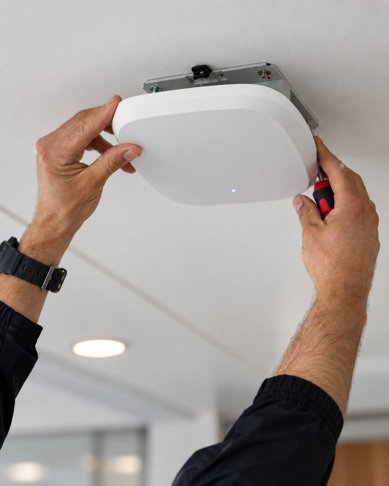

Reliable connectivity is now part of delivering care.
WiFi, networks and data infrastructure designed specifically for UK care homes. Over 7 years' experience, more than 100 care homes completed and 3,000+ devices installed and managed to date.

A care home isn't an office with bedrooms.
A modern care home asks one physical network to do a dozen different jobs at once — reliably, and without any one of them interfering with another. The same infrastructure increasingly needs to support care and clinical systems, staff devices, residents, visitors, security, voice and entertainment, each with different requirements for reliability, security and priority.
We design and build networks around that reality, rather than treating a care home like any other commercial building.
Two starting points, one team.
Get the infrastructure right before the building opens.
Getting the network right during construction is significantly easier — and cheaper — than correcting fundamental design problems once a building is operational. We work alongside developers, main contractors, M&E consultants and architects from design stage through to handover.
- 01 Design, cabling & wireless specification
- 02 Installation & commissioning
- 03 Validation, documentation & handover
Not everything needs replacing.
Where WiFi is dropping out, coverage is patchy or staff devices keep disconnecting, we diagnose the actual cause before recommending anything. A survey identifies what can stay, what needs reconfiguring, and what genuinely needs replacing.
- 01 Network health check / WiFi survey
- 02 Diagnosis & recommendation
- 03 Upgrade works, scheduled around operations
Design, install, fix and support — end to end.
All services →Design
WiFi design, network architecture and technical consultancy for new and existing buildings.
WiFi & network design →Install
Structured cabling, fibre, switching and wireless infrastructure, fully commissioned and tested.
Installation & cabling →Fix
WiFi surveys, network health checks, troubleshooting and diagnosis-led upgrades.
Surveys & upgrades →Support
Remote monitoring, network support and ongoing management once the network is live.
Managed WiFi →Designed around everything your care home needs to connect.
Underneath the finish and the furniture sits a properly segmented network — every category of device on its own logical network, prioritised and secured on its own terms.
Seven years inside care homes.
100+ care homes completed and 3,000+ devices installed and managed to date — across new-build and operational sites throughout the UK.
Care homes run 24 hours a day — disruption during installation or upgrade work is planned around the building, not the other way round.
Access points need to work architecturally as well as technically, positioned for coverage without looking out of place in a resident's corridor or lounge.
On new-build sites, infrastructure needs coordinating with other trades during first fix — sequencing matters as much as the design itself.
Handover documentation matters. A network without accurate records becomes very difficult for anyone to support later, including us.
Featured projects.


Roche Care Homes — WiFi & network upgrade
Roche Care Homes' existing WiFi was struggling to keep up with demand — inconsistent coverage was affecting staff use of digital health-monitoring tools, connectivity dropouts were disrupting residents' calls with family, and the network simply hadn't been built for the number of devices now in daily use across staff, residents and visitors.
We surveyed the existing infrastructure, designed a network to cover the whole property — communal areas, private rooms and outdoor spaces — and rolled it out in phases so care operations were never interrupted. Staff training and a 12-month on-site support warranty were included as part of the handover.
"Thanks to all the team for your work in getting this all completed again with minimal disruption to the site. It's much appreciated and all the homes have been very positive about CareHomeWiFi."View project →


Bradshaw Lodge
This WiFi and data design is standard across every LNT Care Developments home we work on — a single network engineered to cover the complete building for residents and staff alike, designed in before the building opens rather than retrofitted afterwards.
The network runs on UniFi WiFi 7 access points with a fibre backbone, giving each home the maximum bandwidth the incoming supply can support. Data points are cabled, terminated and tested by the onsite electrical contractor ahead of our visit, so once on site it takes two CareHomeWiFi engineers a single working day to have a home fully up and running. We coordinate closely with LNT's contractors on timing, and with Ripple Solutions, who arrange the incoming line.
View project →Experience trusted across the UK care sector.
A selection of the care-home developers and operators we've worked alongside.
Let's talk about your care home.
Whether you're planning a new building or trying to work out why the WiFi keeps dropping, tell us briefly what's going on and we'll come back to you with next steps.